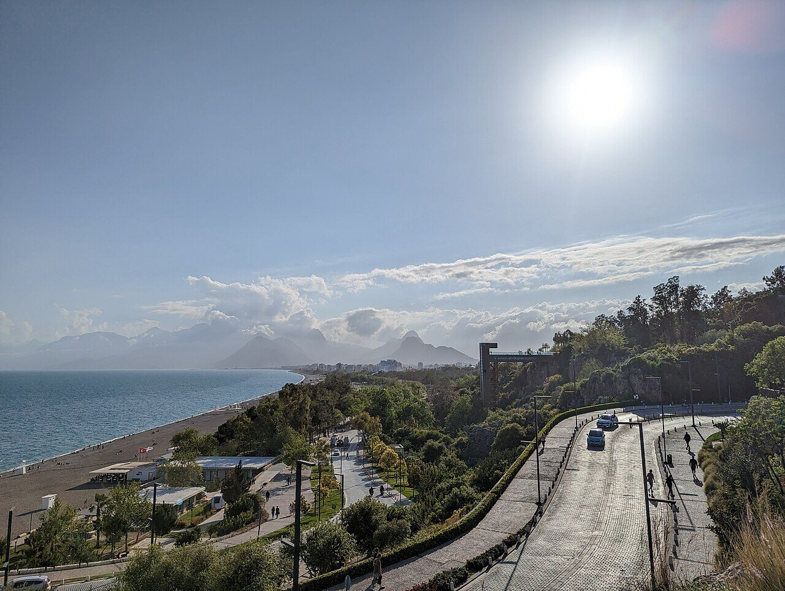

COP31 Runs Into Overtime in Antalya as the Words 'Fossil Fuels' Vanish From the Draft Deal
Nearly 200 countries missed Friday's deadline at the UN climate summit in Turkey. The fight is over whether the final text mentions moving away from oil, gas and coal at all.

ANTALYA, Turkey — The United Nations climate summit in Antalya ran past its Friday, November 20, deadline without a deal, as negotiators from nearly 200 countries argued over whether the final agreement should mention fossil fuels at all.
As of Saturday, COP31 President Murat Kurum, Turkey's environment minister, said the talks were close to the finish line but not there yet. Australia's climate minister Chris Bowen, who is leading the negotiations, pledged to keep going for as long as it takes.
The disappearing words
An early draft called for a faster move away from coal, oil and gas. A slimmer version released on Thursday dropped every reference to fossil fuels after objections from Saudi Arabia and other big oil and gas producers, according to reporting on the drafts. The same draft dropped a proposed $120 billion target for money to help countries adapt to a hotter world.
The European Union wants the deal to build on the promise made at COP28 in Dubai in 2023 to transition away from fossil fuels. EU climate commissioner Wopke Hoekstra put it bluntly: it would be a good deal or no deal. Norway also insisted that the transition language survive, and Panama pushed for global oil production to be capped at today's levels.
Deals on the side
Whatever happens to the main text, the host is leaving with business. Turkey said it had agreed deals and plans worth more than $26 billion during the summit, including a preliminary $15 billion renewable energy agreement with China.
The United States did not take part directly in the talks, for the second year in a row.
What happens next
A fresh draft was expected on Saturday. Every country has to accept the final text, so a single holdout can block it. World Newswire Press will update this story when the talks end.
Is a climate deal that never names fossil fuels better than no deal at all?
Tell the World Desk: info@worldnewswirepress.com or comment on Instagram and Facebook.
Sources
- U.S. News / Reuters: COP31 Climate Summit Risks Failure as Talks Go Deep Into Overtime
- U.S. News / Reuters: COP31 Delivers Deals for Host Turkey as Climate Diplomacy Stalls
- RTÉ: COP31 enters extra day of talks amid fears over agreement
- Forbes: COP31 Overtime: The Fight To Put The 'F-Word' Back In The Deal
- Climate Action: COP31 reaches its final day
- Al-Monitor: COP31 delivers deals for host Turkey as climate diplomacy stalls
Reported and written by the World Desk from the sources listed above; no sentences are copied from other outlets. Approved for publication by Terry Bryant, Editor (directed Nov 21, 2026). Spotted an error? See our corrections policy.